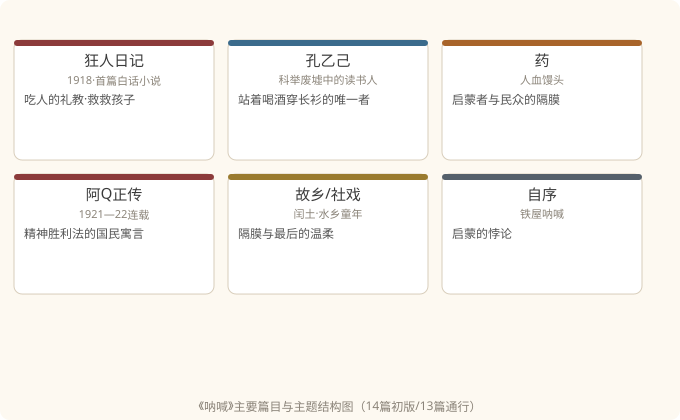

呐喊
| 作者 | 鲁迅 |
|---|---|
| 成书/出版 | 1923年8月北京新潮社初版（Britannica） Lu Xun — Encyclopaedia Britannica（百科全书） |
| 国别/地区 | 中国 |
| 时代 | 现当代 · 现代 |
| 体裁 | 短篇小说集 |
| 语言 | 汉语（白话） |

二、创作背景
1918年5月《新青年》发表《狂人日记》——Britannica 称其为'first published Western-style story written wholly in vernacular Chinese'（首篇全用白话的西式小说），并指出它抨击儒教文化为'吃人'社会，影响新文化运动。此后鲁迅一发不可收，《孔乙己》《药》《明天》《阿Q正传》《故乡》《社戏》等相继问世。
1923年8月，北京新潮社把1918—1922年间的小说结集为《呐喊》（Britannica：Call to Arms, 1923）。初版收14篇（含《不周山》，即《补天》，1930年再版时抽去，通行本13篇——版本细节待核）。
书名取'呐喊'之意：自序中作者自陈，铁屋中的呐喊者或能唤醒几个较为清醒的人，使这绝望的屋子有毁坏的可能——为'慰藉那在寂寞里奔驰的猛士'而作（自序文意，原文为公有领域；本页转述大意并标注出处为《呐喊·自序》）。
三、内容脉络
《自序》：从家道中落、南京求学、仙台弃医（'幻灯片事件'，通说）到钱玄同索稿——一个启蒙者从绝望到'聊以慰藉'的心路。这是理解全书的第一把钥匙。
《狂人日记》：被迫害妄想症患者发现'仁义道德'的字缝里写满'吃人'——文言序言宣布狂人'已赴某地候补'，讽喻闭环。
《孔乙己》《明天》《白光》：科举废墟中的失败者群像——穿长衫站着喝酒的唯一的人、单四嫂子的宝儿、屡试不第而死的陈士成。
《药》：人血馒头——革命者的血被民众当药吃，夏瑜与华小栓的两座坟'中间歪歪斜斜一条细路'。
《阿Q正传》：未庄雇农阿Q以'精神胜利法'应对一切屈辱，被诬杀人而画押——'把圈画圆'的临刑滑稽戏。Britannica：其'精神胜利'进入汉语词汇，叙事'humour and pathos 的混合'。
《故乡》《社戏》：闰土从'紫色的圆脸'少年变成'石像一般'的中年人——'希望本无所谓有，无所谓无'；社戏则保存了江南水乡的最后温柔。
四、主要人物表
| 人物 | 身份 | 说明 |
|---|---|---|
| 狂人 | 迫害狂患者 | 发现'吃人'历史的先觉者，'救救孩子'的呐喊者 |
| 阿Q | 未庄雇农 | '精神胜利法'的化身——'儿子打老子'的自欺成为国民性标签 |
| 孔乙己 | 落第童生 | '站着喝酒而穿长衫的唯一的人'，偷书'窃书不能算偷' |
| 华老栓/夏瑜 | 茶馆主人/革命者 | 人血馒头的买者与血的主人——启蒙者与民众的隔膜 |
| 闰土 | 作者童年的伙伴 | 从月下猹少年到'木偶人'，隔膜的两代人 |
| 祥林嫂 | （属《彷徨》，本集无） | 常被误归《呐喊》，本页澄清归属 |
五、主题与艺术特点
- 国民性批判：吃人的礼教（狂人）、看客与围观（孔乙己、药、示众）、精神胜利（阿Q）——对'沉默的国民的魂灵'的总攻。
- 启蒙的悖论：铁屋子的隐喻——呐喊可能只是叫醒将死之人；夏瑜的血被蘸在馒头上，启蒙者的牺牲被消费。
- 绝望与希望之间：'绝望之为虚妄，正与希望相同'（《野草》语，为同期思想）——《故乡》结尾的路（'世上本没有路'）给出唯一的乐观出口。
- 艺术特点：以小见大的白描、第一/第三人称的反讽设置（狂人序言、孔乙己的'我'、故乡的'我'），现代短篇小说的中国范式由此确立。
六、影响与评论
- Britannica：《狂人日记》为'首篇全用白话的西式小说'，使短篇小说形式合法化（helped legitimize the short-story form），并抨击儒教'吃人'文化。
Lu Xun — Encyclopaedia Britannica（百科全书） - Britannica：《阿Q正传》的'阿Q主义'进入汉语，'精神胜利'命名了一种自我欺骗的机制；鲁迅被称为'常视为20世纪中国文学最伟大者'。
Lu Xun — Encyclopaedia Britannica（百科全书） - Britannica：《呐喊》（Call to Arms, 1923）与《彷徨》（Wandering, 1926）并列为现代小说双峰；鲁迅博物馆1951年在上海开馆。
Lu Xun — Encyclopaedia Britannica（百科全书） - 后世影响：中国现代作家的几乎所有人都在与鲁迅对话（'少不读鲁迅'论争、'鲁迅风'杂文等——本条为文学史通说，具体论争文献待核）。
Lu Xun — Encyclopaedia Britannica（百科全书）
七、阅读建议
- 时代隔膜：科举、辫子、典当、人血馒头需要背景注释。
- 反讽读法是门槛：'我'的态度常常与文本立场相反（孔乙己的'快活'、阿Q的'得意'）。
- 《阿Q正传》的'序'先讨论阿Q姓名籍贯——戏仿学术文体，需识别其反讽。
- 《鲁迅全集》（人民文学出版社，2005年版）：全 集，注释权威。
- 《呐喊》单行本（人民文学出版社'语文推荐阅读'系列）：注释面向学生。
- 英译：杨宪益戴乃迭 Selected Works of Lu Xun；Julia Lovell（蓝诗玲）The Real Story of Ah-Q and Other Tales of Modern China（2009，通说待核）。
先读《自序》→《狂人日记》《孔乙己》《药》《故乡》《社戏》→ 最后精读《阿Q正传》全文。对照阅读《彷徨》里的《祝福》《孤独者》可见其深化。
八、待核实
- 初版篇目（14篇 vs 通行13篇，《不周山》抽去始末）版本细节待核。
- 各篇首发刊物与时间（《新青年》《晨报副刊》等）的逐篇考订待核。
- '幻灯片事件'与弃医从文的史料（藤野先生相关回忆）近年有研究争议，本页从通说。
- 初版书价、印数与销量数据待核。
本页主要来源
鲁迅的其他收录作品：呐喊